We have received many queries about how to create wizards that contain a pop-up that needs to “inherit” or use the tag data that is substituted when the user drops the wizard down on the form. This is a complex requirement but not an unusual one.
This requires knowledge of some more advanced concepts of using and understanding “Aliases” which are essentially variables that can be passed between forms. They are an extremely powerful aspect of the product and once understood will help to minimise configuration of complex projects where there are many of the same objects to monitor.
By way of example you may have many identical distributed pump stations in a water distribution system. You would like to have a single graphic that represents a pump station, which when you need to view the data and say click on a navigation button, at runtime, pops up a template mimic that is populated with the relevant real-time data from the selected pump station. In addition you might want to have some “template” trends and sub faceplates that would be launched by say clicking on a particular pump. This is all possible using the same ideas and technology.
Tip: Wizards that display one or more SmartUI Templates can use their substitutions to drive the values of the aliases of these child SmartUI Templates. For details, see Driving aliases with wizard substitutions.
Have Adroit 8 (MAPS 3) or later installed.
Note: If you are using a version later than this then this how to will probably also apply to your version too, although some dialogs and/or commands may have changed slightly.
We will create a simple example in which we will build a simple wizard representing a tank level with a button that when clicked launches a graphic form that then substitutes the data for the previously configured wizard.
So we want a wizard that can be used several times to represent say a tank farm. Each one when dropped down will be configured to represent a particular tank (tags) as displayed below:
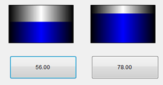
When a user clicks on a button then it launches a pop-up trend showing the actual trend page.
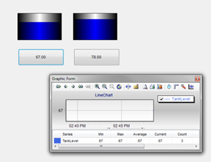
The following steps summarise what we will be doing:
While this procedure may sound pretty complicated, you will see from the results that this is a very powerful mechanism.
Create a project called MyTankWizard in the Enterprise Manager
Right-click on the project and select Create Wizard.
Name your Wizard MyTank.
Add a Rectangle (vector) to represent the tank and a button (control).
Click the glyph , in
the top left corner of the Rectangle vector, which lists its commonly-used properties and configuration tasks and from the Behaviours list add add a Percentage Fill behaviour to the tank.
, in
the top left corner of the Rectangle vector, which lists its commonly-used properties and configuration tasks and from the Behaviours list add add a Percentage Fill behaviour to the tank.
Instead of browsing in a tag, for its Input Data Element name, type the following into the tag dialogue box – {TankLevel}.
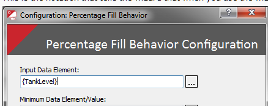
This is the notation that tells the wizard that when you use the wizard later on to prompt you to browse in a tag from the SCADA.
Similarly add a Display Value behaviour to the button and specify the following for its Input Data Element name: {Tankname}.
In the graphic form toolbar menu, click the Optimise Graphic Form size button, which resizes the wizard to the size of the added controls and vectors, so that there are no overlaps at the top, bottom, left or right sides, and then save the wizard.
Firstly, create the necessary Adroit agents, in this case two analogue tags from the Analog agent Type in the Adroit datasource tree view. Name them Tank1 and Tank2 and also add these names as their Agent Description. For the purposes of this exercise, we are not bothering about their scaling, scanning, logging etc.
Test this wizard out on a test form to make sure it works, as follows:
Creating a test graphic form in your project. Call it “test”.
Drag and drop your MyTank wizard onto the Test GF and it should prompt you to provide the relevant tags – do this by clicking the relevant browse button, as follows: browse Tag1.value into the {TankLevel} and Tag1.AgentDescription into the {Tankname}. The results turn green if you have done this correctly.
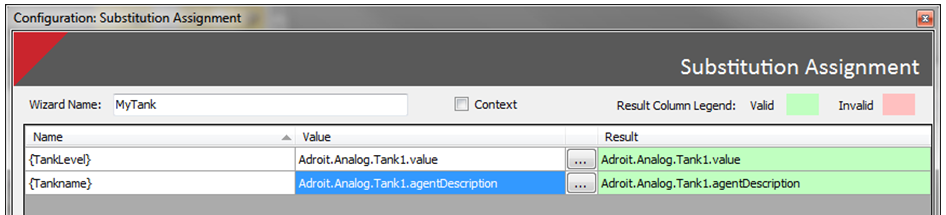
Click the Finish button and then Run your GF in the Designer and the Agent Description will appear on the button.
The tank level is not showing because the value is in fact zero (as this is a new unlinked agent). To test the display of the tank level, simply
double-click Tank1 in the Adroit datasource tree view to display its edit dialog and set the RawValue slot to 65 and click the Update button to see that your tank level is now representative and working. Similarly, change the level of Tank2 to say 45.
Now that your wizard is working we can move on to the more complex aspects of creating and using Aliases to launch and populate a form containing a trend control also to show the individual Tank Level as an example.
Create the graphic form that contains the line chart, call it MyTankTrend.
Note: This is NOT a wizard but a normal graphic form.
From within the Data category of the Toolbox click on the line chart control and drag the size to be something reasonable. In the LineChart configuration wizard that is displayed, in the default Series Setup dialog, change the Title of the default series to say "Tank Level". This is done by double-clicking in the Title field that says “line”.
Click the Finish button and then use your mouse to place the form in the top left of the form. Again just click the Optimise Graphic Form size button to neaten it all up.
What we are doing here is creating form-based variables that can be driven externally from the button when we launch the trend to allow the runtime substitutions of the variables.
This is done from the Properties window, typically on the right hand side of the Designer.
Typically, expand the Advanced section to display a longer list of Properties.
Select the (Collection) field next to the Aliases property to display its browse button, which you click to display the Aliases configuration dialog.
Click the Add button and change the specified substitution name to “TankTrendAlias”.
This is a completely user-configurable text and it just needs to make sense to you as the user. Bear in mind that when doing complex configurations naming these correctly will help you avoid confusion at a later stage.
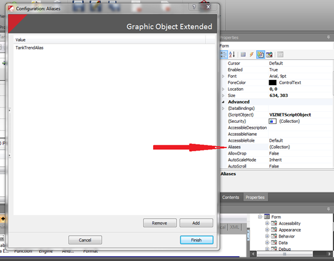
Use the spider engine workspace to add a Variable Data Element Spider.
To achieve this we need to open the Spider Workspace Window. If this window is not currently displayed then click the spider window launcher on the view tab of the main ribbon (toolbar) of the Designer.
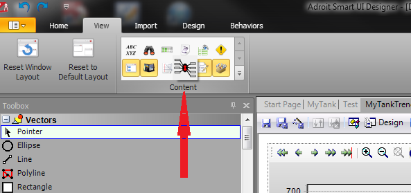
Give yourself some space to work in, if you have two monitors you can even undock the spider workspace and move it to the second screen.
We will get all three spiders we need to work with onto the screen before configuring anything.
You should now have all three spiders that we require displayed in the spider workspace, as shown below:
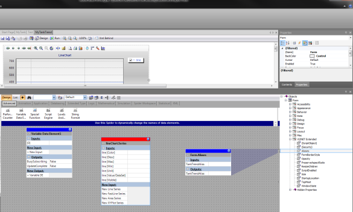
Configuring the flow of data between these spiders means that we need to connect the output of the Alias of the graphic form to the input of the VDE and the output from the VDE to the line Series we configured in the LineChart control.
Firstly create the necessary input and output of the Variable Data Element (VDE) spider, as follows: double-click the +Variable DE under the New Output section of its configuration dialog.
This adds two additional variables, namely vde0 [DE Name {Segment}] and vde0 [Return DE] to the Inputs section and vde0 to the Outputs section.
To briefly explain how the VDE spider works: whatever variable (value/text) is connected to the {0} input is used wherever the {0} is used in other words this acts like a value/text placeholder.
In this example we want the {0} placeholder to be transferred out on the vde0 field output, therefore we need to add the {0} Input to the new vde0 [DE Name {Segment}] input. So double-click the cell next to vde0 [DE Name {Segment}] and type in: {0}
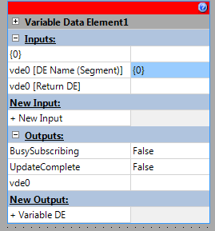
We are need to create the data flow connections (silks) between these spiders to make this all work, as follows:
Click and drag the TankTrendAlias Output from the Form.Aliases Property spider to the {0} Input of the VDE spider. A red line should appear to show this connection.
Similarly, drag and drop the vde0 Output of the VDE spider onto the line [Value/DataSet] Input of the LineChart.Series spider.
The configured spider engine window should look like this:
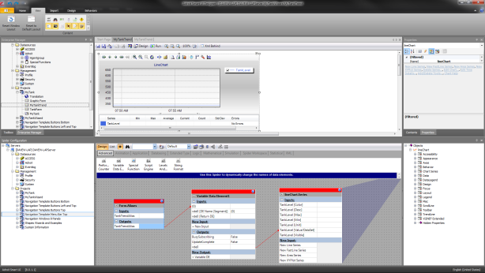
Save the configured MyTankTrend graphic form and you can even close it, if you want to.
Add an Execute Command behaviour to the button to launch the trend graphic form and using the Advanced tab of this Behaviour tie the original tank level variable to the Form Alias we created, as follows:
Re-open or select the MyTank wizard form.
Select the Button control
Click the glyph, in
the top left corner of the Button control, which lists its commonly-used properties and configuration tasks and from the Behaviours list add an “Execute Command” behaviour.
Since this Behaviour defaults to the Open graphic form command, simply browse in your MyTankTrend GF using the browse control that pops up.
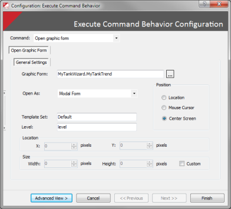
Now we need to “pass” on the original wizard substitution to the MyTankTrend form Alias we created, as follows:click on the Advanced View button on the Execute Command Behaviour dialog.
This displays an additional tab called Aliases, select this tab and click the Get Aliases button.
Double-Click in the Inputs area and add the original {TankLevel} substitution you created for the wizard, which you will see maps to TankTrendAlias on the left hand side.
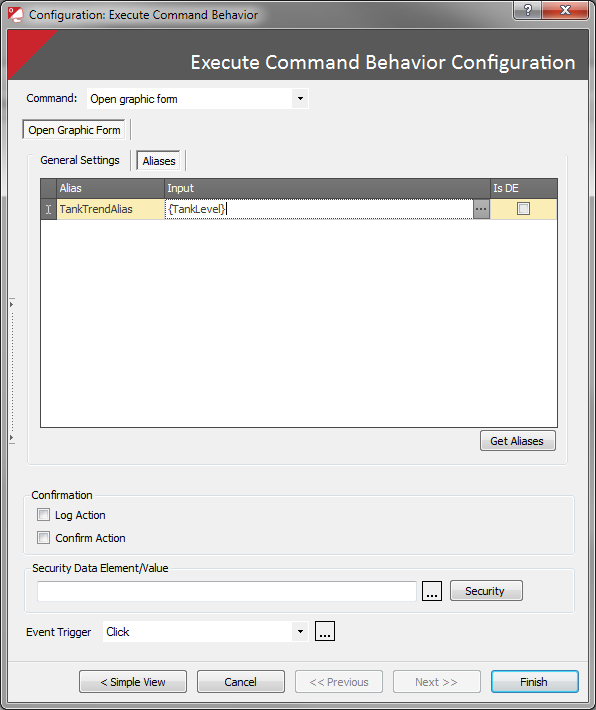
Click the Finish button and we are now ready to use our configured wizard and template trend.
We will now also demonstrate a powerful aspect of the SCADA, namely the ability to automatically update previously used instances of wizards used within projects.
Save the MyTank wizard and the following dialog will pop up:
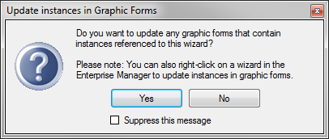
Click yes to display a configuration dialog, which allows you to select the required projects or graphic forms in which you may have used your wizard before. Since we previously used the MyTank wizard on the TestGF in our project - simply check your MyTankWizard project and click the Search button.
The Test GF appears in the list, which you can select to display a preview of this graphic form to ensure that this is the correct graphic form, check the checkbox and click the Update button to update this previously used wizard instance.
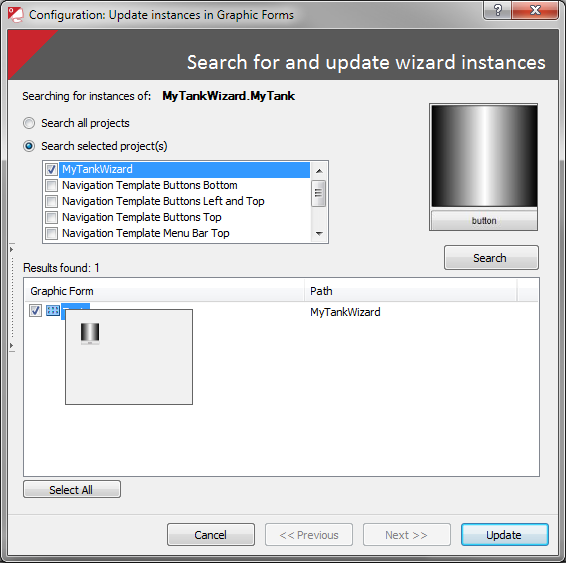
Open the Operator to the form you created with your original wizard and click on one of the buttons and your trend will pop-up with the value of the Tank Level Analog agent.